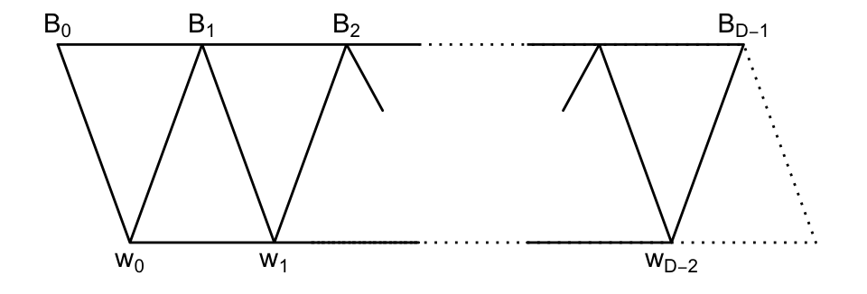
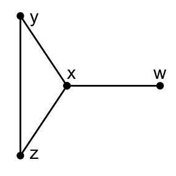

Chapter 16 Thin Modoles of a DRG
Wednesday, February 24, 1993
Let \(\Gamma = (X, E)\) denote any graph of diameter \(D\).
Definition 16.1 For all integer \(i\), the \(i\)-th incidence matrix \(A_i\in \mathrm{Mat}_X(\mathbb{C})\) satisfies \[(A_i)_{xy} = \begin{cases} 1 & \text{if $\partial(x,y) = i$,}\\ 0 & \text{if $\partial(x,y)\neq i$,} \end{cases} \quad (x,y\in X).\] Observe, \[\begin{align} A_0 & = I && (\text{identity})\\ A_1 & = A && (\text{adjacency matrix})\\ A_0 + A_1 + \cdots + A_D & = J && (\text{all 1's matrix}). \end{align}\] In general, \(A_i\) may not belong to Bose-Mesner algebra.
Lemma 16.1 Assume \(\Gamma = (X, E)\) is distance-regular with diameter \(D\geq 1\) and intersection numbers \(c_i, a_i, b_i\).
\[p^h_{i,j} = |\{z\in X\mid \partial(x,z) = i, \; \partial(y,z) = j\}|\] depends only on \(h, i, j\) and not on \(x, y\).
Proof.
\[AA_i \hat{x} = c_{i+1}A_{i+1}\hat{x} + a_iA_i\hat{x} + b_{i-1}A_{i-1}\hat{x}.\] \[\begin{align} \mathrm{LHS} & = A\left(\sum_{y\in X, \partial(x,y) = i}\hat{y}\right)\\ & = c_{i+1}\left(\sum_{z\in X, \partial(x,z) = i+1}\hat{z}\right) + a_i\left(\sum_{z\in X, \partial(x,z) = i}\hat{z}\right) + b_{i-1}\left(\sum_{z\in X, \partial(x,z) = i-1}\hat{z}\right)\\ & = \mathrm{RHS}. \end{align}\]
\[Ap_i(A) = p_{i+1}(A) + a_ip_i(A) + b_{i-1}c_ip_{i-1}(A) \quad (0\leq i\leq D).\] Dividing by \(c_1c_2\cdots c_i\), we have \[A\frac{p_i(A)}{c_1c_2\cdots c_i} = c_{i+1}\frac{p_{i+1}(A)}{c_1c_2\cdots c_{i+1}} + a_i\frac{p_i(A)}{c_1c_2\cdots c_i} + b_{i-1}\frac{p_{i-1}(A)}{c_1c_2\cdots c_i}.\] So, \(A_i\), \(p_i(A)/(c_1c_2\cdots c_i)\) satisfy the same recurrence.
Also boundary condition, \[A_0 = p_0(A) = I.\] Hence, \[A_i = \frac{p_i(A)}{c_1c_2\cdots c_i}\quad (0\leq i\leq D).\]
Observe \(A_0, A_1, \ldots, A_D\in M\) by \((ii)\), \(A_0, A_1, \ldots, A_D\) are linearly independent, since \(p_0, p_1, \ldots, p_D\) are linearly independent.
Thus, \(A_0, A_1, \ldots, A_D\) form a basis for \(M\).
\[\begin{equation} A_iA_j = \sum_{\ell = 0}^Dp^{\ell_{ij}}A_\ell \quad \text{for some }\; p^\ell_{ij}\in\mathbb{C}. \tag{16.1} \end{equation}\] Fix \(h \quad (0\leq h\leq D)\). Pick \(x, y\in X\) with \(\partial(x,y) = h\).
Compute \(x, y\) entry in (16.1), \[\begin{align} (A_iA_j)_{xy} & = \sum_{z\in X}(A_i)_{xz}(A_j)_{zy}\\ & = \sum_{z\in X, \partial(x,z)=i, \partial(y,z)=j} 1\cdot 1\\ & = |\{z\in X\mid \partial(x,z)=i, \partial(y,z)=j\}|. \end{align}\] On the other hand, \[\left(\sum_{\ell=0}^D p^\ell_{ij} A_\ell\right)_{xy} = p^h_{ij}(A_h)_{xy} = p^h_{ij}.\]
\[\frac{1}{|X|} = E_0.\] This proves the assertions.
Theorem 16.1 Let \(\Gamma = (X, E)\) be distance-regular with diameter \(D\geq 2\) and intersection numbers \(c_i, a_i, b_i\). Pick a vertex \(x\in X\). Let \(W\) be a thin irreducible \(T(x)\)-module with endpoint \(r = 1\) and diameter \(d\) (\(d = D-2\) or \(D-1\)). Set \(\gamma_0 = a_0(W) + 1\).
\[\begin{equation} \gamma_i := \frac{c_2c_3\cdots c_{i+1}b_2b_3\cdots b_{i+1}\gamma_0}{x_1(W)x_2(W)\cdots x_i(W)} \quad (0\leq i\leq d) \tag{16.2} \end{equation}\] \(a_i(W), x_i(W)\) are algebraic integers in \(\mathbb{Q}[\gamma_0]\). In particular, if \(\gamma_0\in \mathbb{Q}\), then \(\gamma_i\), \(a_i(W)\) and \(x_i(W)\) are integers for all \(i\).
\[x_1(W), \gamma_1, a_1(W), x_2(W), \gamma_2, a_2(W), \ldots \] using \((i)\), \[\begin{equation} x_i(W) = c_ib_i + \gamma_{i-1}(a_i + c_i - c_{i+1} - a_{i-1}(W)) \quad (1\leq i\leq D-1), \tag{16.3} \end{equation}\] and \[\begin{equation} a_i(W) = \gamma_i - \gamma_{i-1} + a_i + c_i - c_{i+1} \quad (1\leq i\leq D). \tag{16.4} \end{equation}\]
Note. \[p_i = p_1^W + \gamma_{i-1}p^W_{i-1} - c_i(p_{i-1}^W + \gamma_{i-2}^W), \; (\gamma_{-1} = -\gamma_{-2} = 0, \; 0\leq i\leq d+1).\]
Proof. Set \[\tilde{A}_i = A_0 + A_1 + \cdots + A_i \quad (0\leq i\leq D).\]
Claim 1. \(A\tilde{A}_i = c_{i+1}\tilde{A}_{i+1}+(a_i-c_{i+1}+c_i)\tilde{A}_i + b_i\tilde{A}_{i-1} \quad (0\leq i\leq D-1).\)
Proof of Claim 1. \[\begin{align} \text{LHS} & = \sum_{j=0}^i AA_j\\ & = \sum_{j=0}^i (c_{j+1}A_{j+1} + a_jA_j + b_{j-1}A_{j-1})\\ & = \sum_{j=0}^{i-1}A_j(c_j+a_j+b_j) + A_i(c_i+a_i) + A_{i+1}c_{i+1}\\ & = k(A_0 + \cdots + A_{i-1}) + (a_i+c_i)A_i + c_{i+1}A_{i+1}. \end{align}\] \[\begin{align} \text{RHS} & = c_{i+1}(A_0 + A_1 + \cdots + A_{i-1} + A_i + A_{i+1})\\ & \qquad + (a_i - c_{i+1}+c_i)(A_0 + A_1 + \cdots + A_{i-1} + A_i)\\ & \qquad + b_i(A_0 + A_1 + \cdots + A_{i-1})\\ & = k(A_0 + \cdots + A_{i-1}) + A_i(a_i + c_i) + A_{i+1}c_{i+1}. \end{align}\] This proves Claim 1.
Now pick \(0\neq w \in E^*_1(x)W\) and let \[w = \sum_{z\in X, \partial(x,z)=1}\alpha_z\hat{z}.\] Pick \(y\), where \(\alpha_y\neq 0\).
For \(i\) \((0\leq i\leq D)\), define \[\begin{align} B_i & = \tilde{A}_i(\hat{x}- \hat{y})\\ & = \sum_{z\in X, \partial(x,z)\leq i}\hat{z} - \sum_{z\in X, \partial(y,z)\leq i} \hat{z}\\ & = \sum_{z\in X, \partial(x,z)=i, \partial(y,z)=i+1}\hat{z} - \sum_{z\in X, \partial(y,z)=i+1, \partial(y,z)=i} \hat{z}. \end{align}\] Note that \(B_D = O\), \(B_0 = \hat{x}-\hat{y}\), and \[\langle B_0, w_0\rangle = -\alpha_y \neq 0.\]
From Claim 1, \[AB_i = c_{i+1}B_{i+1}+(a_i-c_{i+1}+c_i)B_i + b_iB_{i-1} \; (0\;eq i\leq D), \; B_{-1} = O.\] Let \(p_0^W, \ldots, p^W_d\) denote polynomials for \(W\) from Lemma 9.1. So, \[w_i = p_i^W(A)w \in E^*_{1+i}(x)W, \quad (0\leq i\leq d).\]
Claim 2. \(\langle w_i, B_j \rangle = 0\) if \(j\not\in \{i, i+1\}\), \((0\leq i\leq d, 0\leq j\leq D)\).
Proof of Claim 2. \[w_i\in E^*_{1+i}W, \quad B_j\in E^*_j(x)W + E^*_{j+1}(x)W.\]  Vertical lines indicate possible non-orthogonality.
Compute \[\begin{equation} \langle Aw_i, B_j\rangle = \langle w_i, AB_j\rangle, quad (0\leq i\leq D, \; 0\leq j\leq D-1).\tag{16.5} \end{equation}\] \[\begin{align} \text{LHS} & = \langle w_{i+1},B_j\rangle + a_i(W)\langle w_i,B_j\rangle + x_i(W)\langle w_{i-1},B_j\rangle\\ \text{RHD}& = b_j\langle w_i, B_{j-1}\rangle + (a_j-c_{j+1}+c_j)\langle w_i, B_j\rangle + c_{j+1}\langle w_i, B_{j+1}\rangle. \end{align}\] Evaluate for \(i = j-2, j-1, j, j+1\).
Set \(i = j-2\).  Then (16.5) becomes \[\langle w_{j-1}, B_j\rangle = b_j\langle w_{j-2},B_{j-1}\rangle \quad (2\leq j\leq D-1).\] By induction, \[\langle w_{j-1}, B_j\rangle = b_2b_3\cdots b_j\langle w_{0},B_{1}\rangle \quad (1\leq j\leq D-1).\] Define \[\gamma_0 = \frac{\langle w_0, B_1\rangle}{\langle w_0, B_0\rangle}.\] (We will show \(\gamma_0 = 1+a_0(W)\).)
Then, \[\begin{equation} \langle w_{j-1},B_j\rangle = b_2b_3\cdots b_j\gamma_0\langle w_0, B_0\rangle. \tag{16.6} \end{equation}\]
Set \(i = j+1\). Then (16.5) becomes \[x_{j+1}(W)\langle w_j, B_j\rangle = c_{j+1}\langle w_0, B_{j+1}\rangle \quad (0\leq j\leq d).\] Hence, \[\begin{equation} \langle w_j, B_j\rangle = \frac{x_1(W)\cdots w_j(W)}{c_1c_2\cdots c_j}\langle w_0, B_0\rangle \quad (0\leq j\leq d). \tag{16.7} \end{equation}\]
Set \(i = j-1\). Then (16.5) becomes \[ \langle w_j, B_j\rangle + a_{j-1}(W)\langle w_{j-1}, B_j\rangle = (a_j-c_{j+1}+c_j)\langle w_{j-1},B_j\rangle + b_j\langle w_{j-1},B_{j-1}\rangle. \] Evaluate this using (16.6) and (16.7). \((\langle w_0, B_0\rangle \neq 0)\). Then we have \[\frac{w_1(W)\cdots x_j(W)}{c_1\cdots c_j}+(a_{j-1}(W)-a_j+c_{j+1}-c_j)b_2\cdots b_j\gamma_0 = b_j\frac{x_1(W)\cdots x_{j-1}(W)}{c_1\cdots c_{j-1}},\] \[\left(\gamma_i:=\frac{c_2c_3\cdots c_{i+1}b_2b_3\cdots b_{i+1}\gamma_0}{x_0(W)x_2(W)\cdots x_i(W)} \right).\] \[\frac{x_j(W)}{c_j} = b_j + \frac{c_1c_3\cdots c_{j-1}b_2b_3\cdots b_{j}\gamma_0}{x_0(W)x_2(W)\cdots x_{j-1}(W)}(a_j+c_j-c_{j+1}-a_{j-1}).\] So, \[x_j(W) = c_jb_j + \gamma_{j-1}(a_j+c_j-c_{j+1}-a_{j-1}(W)).\] This proves (16.3).
Set \(i = j\). Then (16.5) becomes \[ a_j(W)\langle w_j, B_j\rangle + x_{j}(W)\langle w_{j-1}, B_j\rangle = (a_j-c_{j+1}+c_j)\langle w_{j},B_j\rangle + c_{j+1}\langle w_{j},B_{j+1}\rangle. \] \[ (a_j(W) - (a_j-c_{j+1}+c_j))\frac{x_1(W)\cdots x_j(W)}{c_1\cdots c_j} x_j(W)b_2\cdots b_j\gamma_0 - c_{j+1}b_2\cdots b_{j+1}\gamma_0 = 0. \] Thus, \[a_j(W)-(a_j-c_{j+1}+c_{j}) + \frac{c_1\cdots c_jb_2\cdots b_j\gamma_0}{x_1(W)\cdots x_{j-1}(W)} - \frac{c_1\cdots c_jc_{j+1}b_2\cdots b_{j+1}\gamma_0}{x_1(W)\cdots x_j(W)} = 0,\] or \[a_j(W) = a_j + c_j - c_{j+1} - \gamma_{j-1} + \gamma_j.\] This proves (16.4).
Also by setting \(i = j = 0\), we have \[\begin{align} a_0(W)\langle w_0, B_0\rangle & = (a_0-c_1+c_0)\langle w_0, B_0\rangle + c_1\langle w_0, B_1\rangle\\ & = -\langle w_0, B_0\rangle + \gamma_0\langle w_0, B_0\rangle. \end{align}\] Hence, \[\gamma_0 = 1 + a_0(W).\] Both \(a_i(W)\) and \(x_i(W)\) are algebraic integers, since they are eigenvalues of matrices with integer entries, namely, \[E^*_{i+1}(x)AE^*_{i+1}(x) \; \text{ and }\; E^*_i(x)AE^*_{i+1}(x)AE^*_i(x).\]
Also \(\gamma_0 = 1+a_0(W)\) is an algebraic integer, and \(\gamma_i - \gamma_{i-1}\) is an algebraic integer by (16.3).
Hence, \(\gamma_i\) is an algebraic integer by induction.
This completes the proof of Theorem 16.1.
Example 16.1 (D=2) \[D = 2 \Leftrightarrow \text{strongly regular}.\] Free parameters are \(k, a_1, c_2\). Let \(W\) be an irreducible module of endpoint \(1\). The matrix representation of \(A|_W\) is \[\begin{pmatrix} a_0(W) & x_1(W)\\ 1 & a_1(W) \end{pmatrix}.\] \(a_0(W)\): free. \[\begin{align} x_1(W) & = c_1b_1 + (a_0(W) + 1)(a_1 + c_1 - c_2 - a_0(W))\\ & = k - a_1 - 1 + a_1a_0(W) + a_0(W) - c_2a_0(W) - a_0(W)^2 + a_1 + a - c_2 - a_0(W)\\ & = a_1a_0(W) - c_2a_0(W) + k - c_2 - a_0(W)^2,\\ \gamma_1 & = 0,\\ a_1(W) & = -(a_0(W)+1) + a_1 + c_1 - c_2\\ & = -a_0(W) + a_1 - c_2. \end{align}\]
Then the matrix has eigenvalues \(\theta, \theta_1\). There is one feasible condition: \(a_0(W)\) is an algebraic integer.
Example 16.2 (D=3) Free parameters \(c_2, c_3, k, a_1, a_2\). The matrix representation becomes \[ A|_{W} = \begin{pmatrix} a_0(W) & x_1(W) & 0 \\ 1 & a_1(W) & x_2(W)\\ 0 & 1 & a_2(W) \end{pmatrix}.\] Here, \(a_0(W)\) is free \((=\gamma - 1)\) \[\begin{align} x_1(W) & = k - 1 - a_1 + \gamma_0(a_1 + 1 - c_2 - a_0(W))\\ & = \gamma_0(a_1 - c_2 - a_0(W)) + k - a_1 + a_0(W). \end{align}\] Set \[\gamma_1(W) = \frac{c_2b_2\gamma_0}{x_1(W)}.\] \[\begin{align} a_1(W) & = \gamma_1 - \gamma_0 + a_1 + 1 - c_2\\ x_2(W) & = \gamma_1(a_2 - c_3 - a_1(W)) + c_2(\gamma_0 + b_1 - a_2 + a_1(W))\\ a_2(W) & = -\gamma_1 + a_2 + c_2 - c_2. \end{align}\] The matrix has eigenvalues, \(\theta, \theta_2, \theta_3\).
There are two feasibility conditions; \(\gamma_0, \gamma_1\) are algebraic integers.
For arbitrary \(D\), there are \(D-1\) feasibility conditions; \(\gamma_0, \gamma_1, \ldots, \gamma_{D-1}\) are algebraic integers.
Lemma 16.2 With the notation of Theorem 16.1, suppose \[f_W = \frac{k-\lambda}{k} \quad (\text{so, }\; a_0(W) = -1).\] Then, \[\begin{align} a_i(W) & = a_i + c_i - c_{i+1} \quad (0\leq i\leq D-1)\\ x_i(W) & = b_ic_i \quad (1\leq i\leq D-1)\\ \gamma_i(W) & = 0. \end{align}\]
Proof. Since \(\gamma_0 = a_0(W) = 1\), \(\gamma_i = 0\).